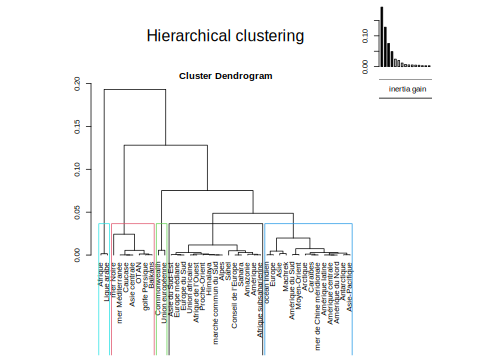
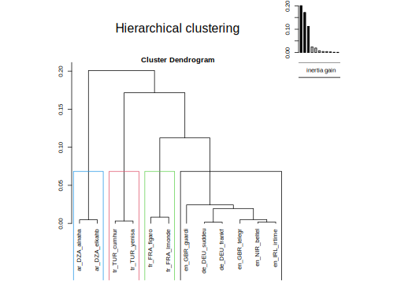

Chapter 8 Top World regions
8.1 Data
We laod an hypercube where the text of news has been removed and where we keep only the number of tags or proportion of news speaking from one or several regions (where1, where2), by media (who) and by time period (when)
who when where1 where2 tags news
1: fr_FRA_figaro 2019-01-01 _no_ _no_ 3262 3262.00
2: fr_FRA_figaro 2019-01-01 CO_EUR CO_EUR 15 15.00
3: fr_FRA_figaro 2019-01-01 SE_medit SE_medit 2 2.00
4: fr_FRA_figaro 2019-01-01 OR_AfrUn OR_AfrUn 2 2.00
5: fr_FRA_figaro 2019-01-01 OR_EU OR_EU 19 19.00
---
3653: ar_DZA_elkahb 2020-12-01 CO_EUR CO_EUR 3 3.00
3654: ar_DZA_elkahb 2020-12-01 LA_maghr LA_maghr 1 1.00
3655: ar_DZA_elkahb 2020-12-01 LA_east_middle LA_east_middle 1 0.25
3656: ar_DZA_elkahb 2020-12-01 LA_east_middle CO_AFR 1 0.25
3657: ar_DZA_elkahb 2020-12-01 CO_AFR LA_east_middle 1 0.25Joining, by = "who"8.2 Top 50 regions in full corpus
8.2.1 Unweighted
We can propose firstly a table of top entities in the whole corpus of newspapers with index 100 for the first entity.
| code | type | label | nb | index | |
|---|---|---|---|---|---|
| 1 | OR_EU | org | Union européenne | 7621 | 100.00 |
| 2 | CO_EUR | cont | Europe | 5347 | 70.17 |
| 3 | CO_AFR | cont | Afrique | 1373 | 18.01 |
| 4 | SE_medit | sea | mer Méditerranée | 960 | 12.60 |
| 5 | OR_NATO | org | OTAN | 829 | 10.88 |
| 6 | CO_ASI_minor | cont | Asie mineure | 499 | 6.55 |
| 7 | SE_black | sea | mer Noire | 477 | 6.26 |
| 8 | CO_ASI | cont | Asie | 350 | 4.59 |
| 9 | LA_east_middle | land | Moyen-Orient | 348 | 4.57 |
| 10 | LA_alpen | land | Alpes | 253 | 3.32 |
| 11 | CO_AMR | cont | Amérique | 230 | 3.01 |
| 12 | LA_sahel | land | Sahel | 209 | 2.74 |
| 13 | SE_arcti | sea | Arctique | 201 | 2.64 |
| 14 | CO_AMR_latin | cont | Amérique latine | 148 | 1.95 |
| 15 | LA_amazon | land | Amazonie | 139 | 1.83 |
| 16 | CO_AFR_south | cont | Afrique australe | 130 | 1.70 |
| 17 | CO_ANT | cont | Antarctique | 116 | 1.52 |
| 18 | OR_CoEur | org | Conseil de l’Europe | 94 | 1.24 |
| 19 | SE_carai | sea | Caraïbes | 93 | 1.22 |
| 20 | LA_sahara | land | Sahara | 84 | 1.10 |
| 21 | SE_polyn | sea | Polynésie | 83 | 1.09 |
| 22 | LA_east_near | land | Proche-Orient | 82 | 1.08 |
| 23 | LA_maghr | land | Machrek | 80 | 1.05 |
| 24 | CO_AMR_south | cont | Amérique du Sud | 78 | 1.03 |
| 25 | CO_ERA | cont | Eurasie | 70 | 0.92 |
| 26 | LA_balka | land | Balkans | 59 | 0.77 |
| 27 | CO_AFR_west | cont | Afrique de l’Ouest | 58 | 0.75 |
| 28 | CO_AMR_centr | cont | Amérique centrale | 54 | 0.71 |
| 29 | OR_Merco | org | marché commun du Sud | 53 | 0.69 |
| 30 | OR_comwl | org | Commonwealth | 44 | 0.57 |
| 31 | OR_ArLig | org | Ligue arabe | 43 | 0.56 |
| 32 | CO_AMR_north | cont | Amérique du Nord | 42 | 0.55 |
| 33 | CO_AMR_north | cont | Amérique septentrionale | 42 | 0.55 |
| 34 | CO_ASI_south_east | cont | Asie du Sud-Est | 42 | 0.54 |
| 35 | LA_cauca | land | Caucase | 41 | 0.54 |
| 36 | SE_antil | sea | Antilles | 41 | 0.54 |
| 37 | LA_himal | land | Himalaya | 40 | 0.53 |
| 38 | SE_china_south | sea | mer de Chine méridionale | 40 | 0.53 |
| 39 | OR_AfrUn | org | Union africaine | 36 | 0.47 |
| 40 | SE_persi | sea | golfe Persique | 34 | 0.44 |
| 41 | CO_ASI_centr | cont | Asie centrale | 32 | 0.43 |
| 42 | CO_EUR_east | cont | Europe médiane | 32 | 0.43 |
| 43 | CO_ASI_pacif | cont | Asie-Pacifique | 28 | 0.36 |
| 44 | SE_india | sea | océan Indien | 26 | 0.34 |
| 45 | CO_AFR_ssahr | cont | Afrique subsaharienne | 24 | 0.31 |
| 46 | CO_AFR_east | cont | Afrique de l’Est | 20 | 0.26 |
| 47 | OR_ECWAS | org | communauté économique des États de l’Afrique de l’Ouest | 20 | 0.26 |
| 48 | LA_scand | land | Scandinavie | 19 | 0.25 |
| 49 | CO_EUR_centr | cont | Europe centrale | 18 | 0.24 |
| 50 | CO_EUR_south | cont | Europe du Sud | 18 | 0.23 |
8.2.2 Weighted
| code | type | label | nb | index | |
|---|---|---|---|---|---|
| 1 | OR_EU | org | Union européenne | 7811 | 100.00 |
| 2 | CO_EUR | cont | Europe | 5393 | 69.05 |
| 3 | CO_AFR | cont | Afrique | 1909 | 24.45 |
| 4 | SE_medit | sea | mer Méditerranée | 836 | 10.71 |
| 5 | OR_NATO | org | OTAN | 743 | 9.52 |
| 6 | LA_east_middle | land | Moyen-Orient | 420 | 5.37 |
| 7 | CO_ASI | cont | Asie | 376 | 4.81 |
| 8 | SE_black | sea | mer Noire | 358 | 4.58 |
| 9 | CO_ASI_minor | cont | Asie mineure | 340 | 4.35 |
| 10 | LA_alpen | land | Alpes | 270 | 3.46 |
| 11 | LA_sahel | land | Sahel | 262 | 3.35 |
| 12 | SE_arcti | sea | Arctique | 210 | 2.69 |
| 13 | CO_AMR | cont | Amérique | 203 | 2.60 |
| 14 | CO_AMR_latin | cont | Amérique latine | 166 | 2.13 |
| 15 | LA_amazon | land | Amazonie | 131 | 1.68 |
| 16 | CO_AFR_south | cont | Afrique australe | 127 | 1.63 |
| 17 | CO_ANT | cont | Antarctique | 113 | 1.45 |
| 18 | LA_east_near | land | Proche-Orient | 102 | 1.30 |
| 19 | CO_AMR_south | cont | Amérique du Sud | 98 | 1.25 |
| 20 | SE_carai | sea | Caraïbes | 97 | 1.24 |
| 21 | LA_maghr | land | Machrek | 92 | 1.18 |
| 22 | LA_sahara | land | Sahara | 78 | 1.00 |
| 23 | OR_CoEur | org | Conseil de l’Europe | 75 | 0.96 |
| 24 | CO_AFR_west | cont | Afrique de l’Ouest | 73 | 0.93 |
| 25 | SE_polyn | sea | Polynésie | 73 | 0.93 |
| 26 | LA_balka | land | Balkans | 61 | 0.78 |
| 27 | OR_ArLig | org | Ligue arabe | 57 | 0.73 |
| 28 | OR_Merco | org | marché commun du Sud | 53 | 0.68 |
| 29 | CO_ASI_south_east | cont | Asie du Sud-Est | 51 | 0.65 |
| 30 | CO_AMR_centr | cont | Amérique centrale | 51 | 0.65 |
| 31 | CO_ERA | cont | Eurasie | 50 | 0.64 |
| 32 | SE_china_south | sea | mer de Chine méridionale | 48 | 0.61 |
| 33 | OR_comwl | org | Commonwealth | 47 | 0.61 |
| 34 | LA_himal | land | Himalaya | 46 | 0.58 |
| 35 | CO_AMR_north | cont | Amérique du Nord | 39 | 0.50 |
| 36 | CO_AMR_north | cont | Amérique septentrionale | 39 | 0.50 |
| 37 | OR_AfrUn | org | Union africaine | 37 | 0.47 |
| 38 | SE_antil | sea | Antilles | 36 | 0.46 |
| 39 | SE_persi | sea | golfe Persique | 35 | 0.44 |
| 40 | LA_cauca | land | Caucase | 34 | 0.44 |
| 41 | CO_EUR_east | cont | Europe médiane | 33 | 0.42 |
| 42 | SE_india | sea | océan Indien | 32 | 0.41 |
| 43 | CO_AFR_ssahr | cont | Afrique subsaharienne | 29 | 0.38 |
| 44 | CO_ASI_centr | cont | Asie centrale | 26 | 0.33 |
| 45 | CO_EUR_centr | cont | Europe centrale | 24 | 0.31 |
| 46 | CO_AFR_east | cont | Afrique de l’Est | 24 | 0.30 |
| 47 | CO_ASI_pacif | cont | Asie-Pacifique | 23 | 0.30 |
| 48 | CO_EUR_south | cont | Europe du Sud | 23 | 0.29 |
| 49 | OR_ECWAS | org | communauté économique des États de l’Afrique de l’Ouest | 17 | 0.22 |
| 50 | LA_scand | land | Scandinavie | 17 | 0.21 |
8.3 Top 10 regions by media
8.3.1 German newspapers - Top 10 regions
| tab1 | FAZ_Region | FAZ pct | Süd. Zeit._Region | Süd. Zeit. pct |
|---|---|---|---|---|
| 1 | Union européenne | 100.0 | Union européenne | 100.0 |
| 2 | Europe | 51.0 | Europe | 38.6 |
| 3 | OTAN | 10.7 | Moyen-Orient | 8.1 |
| 4 | Afrique | 7.0 | OTAN | 7.3 |
| 5 | Afrique australe | 5.1 | Afrique | 6.7 |
| 6 | mer Méditerranée | 4.1 | mer Méditerranée | 5.6 |
| 7 | Asie | 3.5 | Alpes | 3.7 |
| 8 | Moyen-Orient | 3.0 | Afrique australe | 2.7 |
| 9 | Alpes | 2.9 | Proche-Orient | 1.9 |
| 10 | Europe médiane | 1.6 | Amérique du Sud | 1.9 |
8.3.2 French newspapers - Top 10 regions
| tab1 | Figaro_Region | Figaro pct | Le Monde_Region | Le Monde pct |
|---|---|---|---|---|
| 1 | Europe | 100.0 | Europe | 100.0 |
| 2 | Union européenne | 98.3 | Union européenne | 70.5 |
| 3 | Amérique | 15.1 | Afrique | 41.9 |
| 4 | mer Méditerranée | 14.1 | Sahel | 13.9 |
| 5 | Afrique | 12.3 | mer Méditerranée | 11.7 |
| 6 | Alpes | 10.9 | Alpes | 10.5 |
| 7 | OTAN | 9.4 | Amérique | 8.9 |
| 8 | Amazonie | 9.4 | OTAN | 6.9 |
| 9 | Sahel | 8.5 | Amazonie | 6.0 |
| 10 | Polynésie | 5.9 | Proche-Orient | 6.0 |
8.3.3 UK newspapers - Top 10 regions
| tab1 | Guardian_Region | Guardian pct | Daily Telegraph_Region | Daily Telegraph pct |
|---|---|---|---|---|
| 1 | Union européenne | 100.0 | Union européenne | 100.0 |
| 2 | Europe | 58.4 | Europe | 52.3 |
| 3 | Afrique | 14.5 | Afrique | 14.6 |
| 4 | Arctique | 10.1 | Asie | 5.2 |
| 5 | Moyen-Orient | 9.7 | Moyen-Orient | 2.9 |
| 6 | OTAN | 6.4 | Arctique | 2.5 |
| 7 | Amérique latine | 4.6 | Commonwealth | 2.1 |
| 8 | Asie | 4.4 | OTAN | 2.1 |
| 9 | Antarctique | 3.8 | Caraïbes | 2.1 |
| 10 | Caraïbes | 3.3 | Amérique latine | 1.9 |
8.3.4 Irish newspapers - Top 10 regions
| tab1 | Irish Times_Region | Irish Times pct | Belfast Telegraph_Region | Belfast Telegraph pct |
|---|---|---|---|---|
| 1.0 | Union européenne | 100.0 | Union européenne | 100.0 |
| 2.0 | Europe | 31.0 | Europe | 30.7 |
| 3.0 | Afrique | 2.9 | Afrique | 3.7 |
| 4.0 | OTAN | 2.3 | Commonwealth | 3.1 |
| 5.0 | Asie | 2.1 | Arctique | 3.1 |
| 6.0 | Moyen-Orient | 1.8 | OTAN | 2.5 |
| 7.0 | mer Méditerranée | 1.4 | Moyen-Orient | 2.4 |
| 8.0 | Machrek | 1.0 | Asie | 2.3 |
| 9.5 | Amérique latine | 0.8 | Caraïbes | 1.7 |
| 9.5 | Alpes | 0.8 | mer Méditerranée | 0.9 |
8.3.5 Turkish newspapers - Top 10 regions
| tab1 | Cumhuryet_Region | Cumhuryet pct | Yeni Savak_Region | Yeni Savak pct |
|---|---|---|---|---|
| 1 | Europe | 100.0 | Europe | 100.0 |
| 2 | Union européenne | 68.5 | Union européenne | 82.8 |
| 3 | Asie mineure | 39.3 | mer Méditerranée | 53.3 |
| 4 | mer Méditerranée | 31.4 | mer Noire | 41.0 |
| 5 | OTAN | 24.8 | OTAN | 34.1 |
| 6 | mer Noire | 23.0 | Asie mineure | 28.4 |
| 7 | Afrique | 7.9 | Afrique | 17.5 |
| 8 | Asie | 5.9 | Asie | 6.3 |
| 9 | Eurasie | 4.4 | Eurasie | 5.3 |
| 10 | Afrique australe | 3.8 | Antarctique | 3.2 |
8.3.6 Algerian newspapers
| tab1 | Al Nahar (ar) | pct1 | El Kahbar (ar) | pct2 |
|---|---|---|---|---|
| 1 | Afrique | 100.0 | Afrique | 100.0 |
| 2 | Europe | 68.7 | Europe | 34.9 |
| 3 | Union européenne | 29.2 | Union européenne | 13.7 |
| 4 | Sahel | 10.6 | mer Méditerranée | 6.4 |
| 5 | Asie | 9.6 | Asie | 5.7 |
| 6 | Moyen-Orient | 6.3 | Moyen-Orient | 4.6 |
| 6 | Ligue arabe | 6.3 | Machrek | 3.2 |
| 8 | mer Méditerranée | 5.1 | Sahel | 3.2 |
| 10 | Amazonie | 2.9 | Ligue arabe | 2.1 |
| 10 | Machrek | 2.9 | OTAN | 1.4 |
8.4 Synthesis
The synthesis is realized with regions
8.4.1 Factor 1-2
8.4.2 Factors 3-4
8.4.3 Cluster analysis (world regions)

8.4.4 Cluster analysis (medias)
